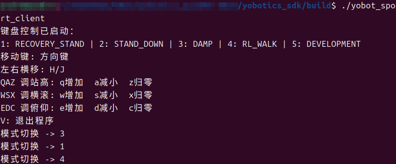
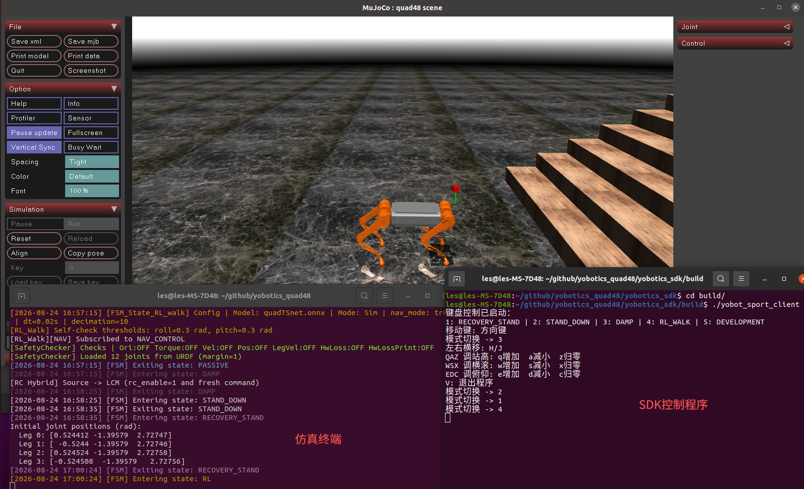

2.3 Проверка предустановленных моделей¶
Назначение¶
Этот раздел объясняет, как проверить встроенные предустановленные модели, такие как RL_WALK и RL_RUN, в MuJoCo.
Предварительные условия¶
- Симуляция MuJoCo запущена командой
bash scripts/start_mujoco.sh --config config_sim.yaml. - Файлы ONNX-моделей в
actor_model/присутствуют полностью. - Пути моделей
rl_walkиrl_run, размерности наблюдений, размерности суставов и параметры управления вconfig_sim.yamlсоответствуют моделям.
Проверяемые пункты¶
| Пункт | Расположение | Описание |
|---|---|---|
| Путь модели | rl_walk.model_path, rl_run.model_path в config_sim.yaml |
Указывает на ONNX-файлы в actor_model/ |
| Размерность наблюдения | obs_dim |
Должна соответствовать входу модели |
| Размерность суставов | dof_dim |
Текущий четвероногий робот использует 12 |
| Масштаб действия | action_scale |
Влияет на амплитуду выхода политики, преобразуемую в целевые положения суставов |
| PD-параметры | dof_kp, dof_kd |
Влияют на жесткость и демпфирование отслеживания |
| Ограничение момента | tau_limit |
Предотвращает чрезмерный выход |
Шаги¶
- Запустите симуляцию:
bash scripts/start_mujoco.sh --config config_sim.yaml
- Используйте SDK или точку входа управления, чтобы переключиться в
RECOVERY_STAND, затем войдите вRL_WALKилиRL_RUN.

- Наблюдайте позу, походку и устойчивость робота в MuJoCo Viewer.
- Одновременно запустите мониторинг LCM:
bash scripts/monitor_lcm.sh --no-gui
- Чтобы записать RL-данные, временно включите соответствующий переключатель логирования и запустите снова.
Критерии успешного выполнения¶
- Модель загружается без ошибок.
- Робот может войти в соответствующий RL-режим из безопасной позы.
- Положение, скорость и момент суставов не показывают аномальных всплесков.
- Каналы LCM продолжают публиковать данные, а журналы контроллера не показывают NaN, Inf или ошибок размерности входа/выхода модели.

Примечание по безопасности¶
Если в симуляции появляются тряска, падение, чрезмерное движение или ошибки журнала, не развертывайте эту модель на физическом роботе. Сначала проверьте путь модели, построение наблюдений, порядок суставов, масштаб действия, углы суставов по умолчанию и PD-параметры.